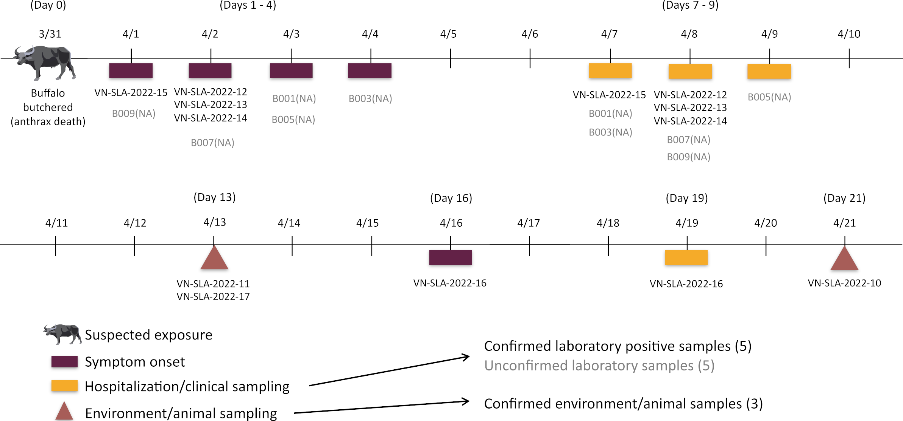
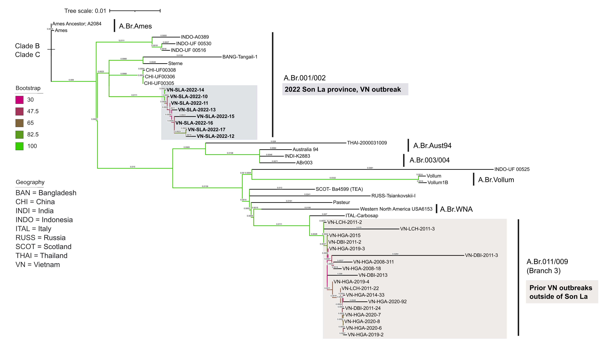
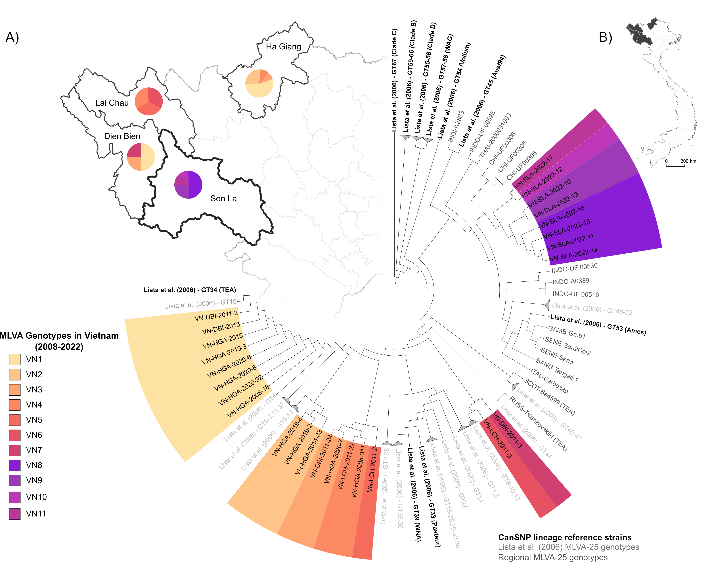
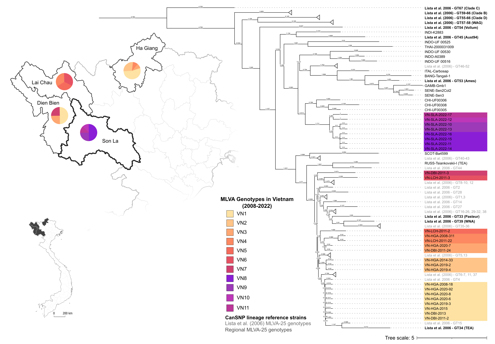

In April 2022, an anthrax outbreak in Son La Province, Vietnam exposed 137 people across three villages following the butchering of a water buffalo (Bubalus bubalis). Early investigations suggested a single animal was the source of all human exposures. By combining whole genome sequencing with spatial analysis, this study challenged that assumption — revealing unexpected genetic diversity among isolates that pointed to multiple, likely undetected, animal sources circulating in the region.
This work demonstrates how integrating molecular epidemiology with place-based spatial reasoning can uncover hidden transmission dynamics that traditional outbreak investigations miss.

Timeline of exposure events, case onset, and isolate recovery relative to the initial buffalo butchering event.

Maximum likelihood tree based on the wgSNP analysis of Bacillus anthracis strains from the 2022 Son La outbreak (bolded, gray), past Vietnam (VN) outbreaks (tan), regional references, and terminal clade strains.

Neighbor-joining tree of MLVA-25 genotypes showing local genetic diversity of Bacillus anthracis strains from the 2022 Son La outbreak (purple shades) and past Vietnam outbreaks (orange and red shades).

Traditional representation of Neighbor-joining tree, using branch lengths of MLVA-25 genotypes depicting the local genetic diversity of Bacillus anthracis strains from the 2022 Son La outbreak (purple shades) and past Vietnam outbreaks (orange and red shades).
Metrailer MC, Hoang TT, Jiranantasak T, Luong T, Hoa LM, Pham QT, Hung TT, Huong VT, Pham TL, Ponciano JM, Hamerlinck G. Spatial and phylogenetic patterns reveal hidden infection sources of Bacillus anthracis in an anthrax outbreak in Son La province, Vietnam. Infection, Genetics and Evolution. 2023 Oct 1;114:105496. View publication